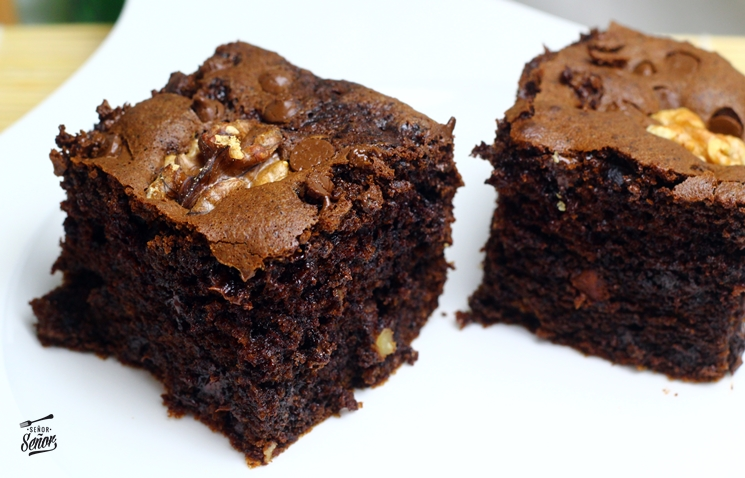

RECETA BÁSICA DE CAFÉ
Ingredientes
- Café instantáneo
- Agua caliente
- Azúcar o endulzante
- Leche o crema (opcional)
Preparación
- Calienta agua sin dejarla hervir.
- Agrega café instantáneo en la taza.
- Vierte un poco de agua caliente.
- Mezcla hasta disolver.
- Completa la taza con agua.
- Agrega azúcar o leche si deseas.
RECETA DE BROWNIES
Ingredientes
- 150 g mantequilla
- 200 g azúcar
- 3 huevos
- 100 g cacao
- 100 g harina
- 1 cucharadita vainilla
Preparación
- Precalentar horno a 180°C.
- Derretir mantequilla.
- Mezclar mantequilla con azúcar.
- Agregar huevos.
- Añadir cacao, harina y vainilla.
- Hornear 20-25 minutos.
